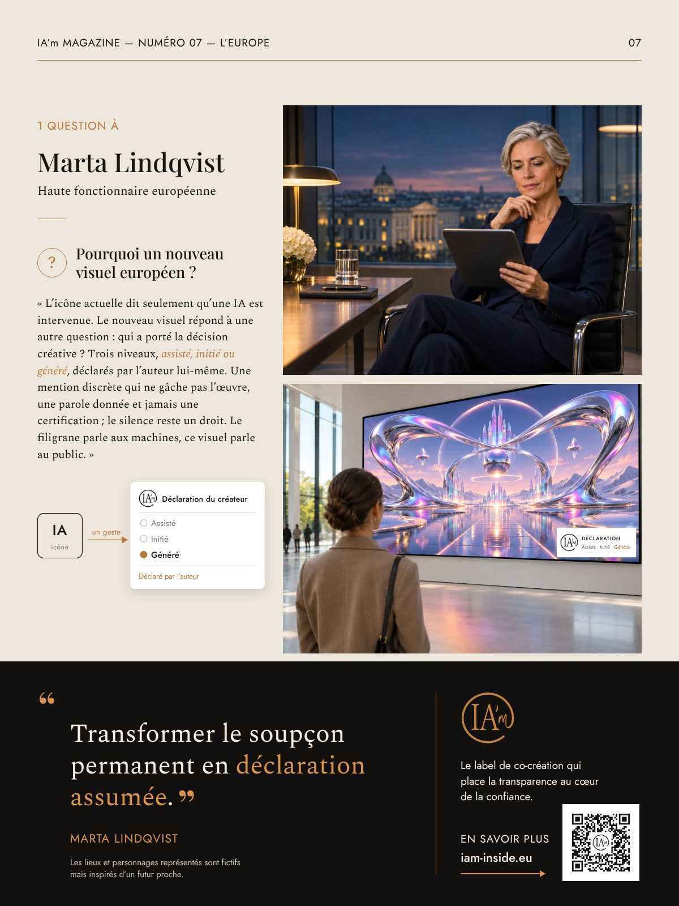

Numéro 07 · Hiver 2026
L’Europe
« Derrière l’IA, un créateur qui assume. » Pourquoi l’Europe mise sur la déclaration plutôt que sur la détection.
Les lieux et les personnages représentés sont fictifs, mais inspirés d’un futur proche.
Numéro 07
L’entretien
Marta Lindqvist
Haute fonctionnaire européenne chargée de la transparence des contenus, Marta Lindqvist défend une idée simple : « L’icône dit qu’une machine est passée. Elle ne dit pas qui a décidé. »
D’un geste sur l’icône, un nouveau visuel s’ouvre : Assisté, Initié ou Généré. Une parole donnée par le créateur, lisible par tous, à côté du marquage des machines.

Transformer le soupçon permanent en déclaration assumée.Marta Lindqvist — IA’m Magazine, Numéro 07
Un créateur, ça s’autorise.
Une création, ça s’assume.